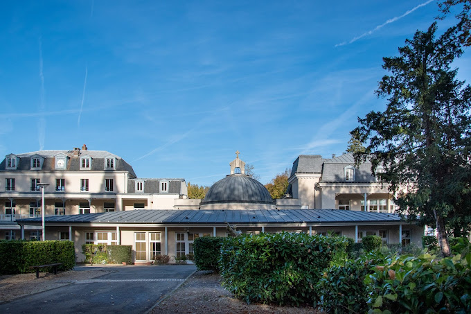

Pré-Bac

J'ai suivi une filière générale au lycée au sein du lycée privé Notre-Dame de Sion à Evry-Courcouronnes en ayant pris les spécialité Mathématiques, Sciences Économiques & Sociales (SES) & Numériques et Sciences informatiques (NSI).
Ma formation Post-Bac
Je suis actuellement étudiant en BTS SIO (Brevet de Technicien Supérieur en Services Informatiques aux Organisations) au sein du lycée Parc des Loges à Evry. Il s'agit d'une formation de 2 ans après le baccalauréat qui forme des technicien spécialisé en informatique. Ce diplôme propose 2 spécialités : SISR (Solutions d'Infrastructure, Systèmes et Réseaux) et SLAM (Solutions Logicielles et Applications Métiers). J'ai pour ma part choisi l'option SLAM car je souhaite me spécialiser dans le développement et la gestion de base de données
Présentation du
Le BTS SIO (Brevet de Technicien Supérieur en Services Informatiques aux Organisations) est une formation de 2 ans après le baccalauréat et apporte des compétences dans le support et la mise à disposition de services informatiques, ainsi qu’en cybersécurité. Ce diplôme propose deux spécialités : SISR (Solutions d'Infrastructure, Systèmes et Réseaux) et SLAM (Solutions Logicielles et Applications Métiers).
- La spécialité SISR (Solutions d'Infrastructure, Systèmes et Réseaux) se concentre sur la gestion des réseaux et des infrastructures informatiques, elle permet d'acquérir des compétences dans 3 domaines d'activités :
- Support et mise à disposition de services informatiques : assurer la disponibilité des services informatiques et accompagner la transformation numérique.
- Administration des systèmes et des réseaux : concevoir, installer, tester et administrer des solutions d'infrastructure réseau.
- Cybersécurité des services informatiques : sécuriser les infrastructures réseau et les systèmes, et protéger les données et l'identité numérique de l'entreprise.
- la spécialité SLAM (Solutions Logicielles et Applications Métiers) est axée sur le développement de logiciels et la gestion des bases de données et permet d'acquérir des compétences dans trois domaines d'activité :
- Support et mise à disposition de services informatiques : assurer la disponibilité des services informatiques et accompagner la transformation numérique.
- Cybersécurité des services informatiques : sécuriser les équipements, protéger les données et l'identité numérique de l'entreprise.
- Conception et développement d'applications : concevoir, développer et maintenir des solutions applicatives et des bases de données.